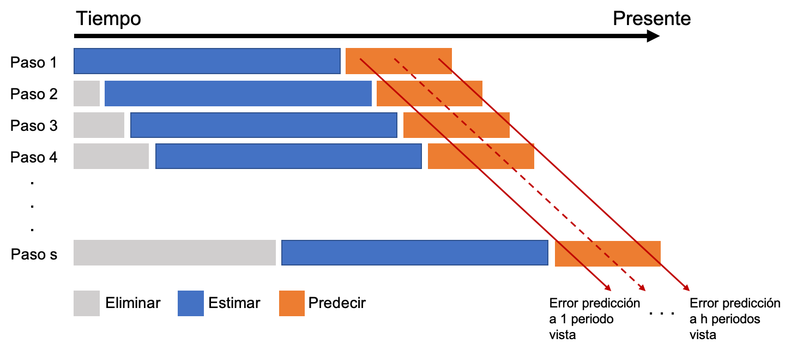

Introducción
En muchos casos es preciso aplicar un método de predicción rápido y sencillo:
- A causa del elevado número de series que tienen que ser analizadas.
- Debido a la rapidez con que las predicciones se han de dar.
Actualmente existen muchos métodos sencillos de predicción, entre lo que cabe destacar dos:
- Métodos de media móvil (Tema 4).
- Métodos de alisado exponencial (Tema 5).
Estas técnicas, a pesar de su sencillez, son bastante adecuadas cuando la previsión es a corto plazo:
“Statistically sophisticated or complex methods do not necessarily produce more accurate forecasts than simpler ones.” Makridakis y Hibon (2000).
Pero aún hay métodos más sencillos que quedan englobados bajo el paraguas de métodos ingenuos que veremos en este tema.
Criterios de calidad
En este tema y en los siguientes se verán diferentes métodos para predecir una serie temporal. Así, es preciso definir criterios de bondad de ajuste que permitan estimar tanto la calidad del ajuste como de las predicciones de un método.
“The rankings of the performance of the various methods vary according to the accuracy measure being used.” Makridakis y Hibon (2000).
Notación y definiciones
Dada una serie temporal \(\{y_t\}_{t=1}^T\), se define:
- Previsión \(h\) periodos adelante, como la previsión de la serie para el periodo \(t+h\) disponiendo de información hasta el periodo \(t\), y se denota por \(\hat{y}_{t+h|t}\). Por simplicidad lo escribiremos también como \(\hat{y}_{t+h}\).
- Así, \(\hat{y}_{t+1|t}\) es la previsión un periodo adelante o a un periodo vista. Es decir, la previsión de la serie en \(t+1\) desde el periodo \(t\).
- De nuevo, por simplicidad denotaremos a \(\hat{y}_{t+1|t}\) como \(\hat{y}_{t+1}\); y como \(\hat{y}_{t}\) a la previsión en \(t\), con datos hasta el periodo \(t-1\) (\(\hat{y}_{t} = \hat{y}_{t|t-1}\)).
Se define como error de previsión, en este caso intra-muestral a un periodo vista, a \[\hat{e}_t=y_t-\hat{y}_t,\] de forma que la serie \(\{\hat{e}_t\}_{t=1}^T\) nos permitirá definir varios criterios de calidad de ajuste.
Medidas de precisión de la predicción
Dada una serie \(\{y_t\}_{t=1}^T\), un método de predicción y su vector de errores asociado \(\{\hat{e}_t\}_{t=1}^T\), podemos definir múltiples medidas de calidad del método de predicción. Las más habituales son (siglas en inglés):
- Error medio (ME): \(\frac{1}{T}\sum_{t=1}^T \hat{e}_t\)
- Raíz del error cuadrático medio (RMSE): \(\sqrt{\frac{1}{T}\sum_{t=1}^T \hat{e}^2_t}\)
- Error absoluto medio (MAE): \(\frac{1}{T}\sum_{t=1}^T |\hat{e}_t|\)
- Error porcentual medio (MPE): \(\frac{100}{T}\sum_{t=1}^T \frac{\hat{e}_t}{y_t}\)
- Error porcentual absoluto medio (MAPE): \(\frac{100}{T}\sum_{t=1}^T \big|\frac{\hat{e}_t}{y_t}\big|\)
- Error porcentual absoluto medio simétrico (sMAPE): \(\frac{200}{T}\sum_{t=1}^T \Big|\frac{\hat{e}_t}{y_t + \hat{y}_t}\Big|\)
- Error escalado absoluto medio (MASE): \(\big(\frac{1}{T}\sum_{t=1}^T |\hat{e}_t|\big)/q\), donde \(q\) es el error absoluto medio para un método ingenuo de predicción:
- \(q=\frac{1}{T-1}\sum_{t=2}^T |y_t-y_{t-1}|\) para series sin estacionalidad
- \(q=\frac{1}{T-m}\sum_{t=m+1}^T |y_t-y_{t-m}|\) para series con estacionalidad
- Correlación entre \(\hat{e}_t\) y \(\hat{e}_{t-1}\) (ACF1).
ME y MAE no permiten valorar la calidad de un modelo, pero si el posible sesgo de las predicciones.
- Lo esperado es un valor cercano a cero (con relación al valor medio de la serie). Valores muy alejados de cero son indicadores de sesgo de predicción.
RMSE y MAE indican el error medio cometido, medido en las mismas unidades que la serie temporal.
- Están acotadas inferiormente por el valor óptimo de 0, pero no hay cota superior.
MAPE y sMAPE indican el error porcentual medio cometido.
- Están acotadas inferiormente por el valor óptimo de 0%, y la cota superior natural es 100%, aunque podría sobrepasarse.
- Si \(y_t\) puede valer 0, entonces MAPE no se puede calcular. Además, MAPE penaliza más los errores negativos frente a los errores positivos. La medida de precisión sMAPE se define a fin de corregir estos problemas.
MASE es la ratio entre el error del método usado y el error de un método ingenuo de predicción. Permite saber cuánto ganamos en capacidad predictiva al pasar de un método ingenuo a otro más complicado.
- Un valor cercano a 1 indica que el método usado no es mejor que el método ingenuo
- Cuanto más cercano a 0, mejor es el método usado respecto del método ingenuo
- Su complementario a 1 se puede interpretar como la tasa de mejora
ACF1 no es propiamente un indicador de calidad del modelo, pero indica la capacidad de mejora que hay en la estimación del intervalo de confianza de las predicciones. Lo veremos con más detalle en el siguiente tema. Por ahora basta saber que:
- Un valor cercano a 0 indica que hay poca capacidad de mejora.
- Un valor cercano a 1 o -1 indica que hay mucha capacidad de mejora.
Las medias se pueden sustituir por medianas. Esto es especialmente útil cuando para algunas observaciones hay errores atípicamente altos.
Si estos indicadores de calidad se basan en predicciones intra-muestrales a un periodo vista, presentan dos problemas. Primero, evalúan el error de predicción a un periodo vista, cuando en muchas situaciones reales las predicciones se realizan sobre un horizonte temporal más amplio. Segundo, son errores intra-muestrales, resultantes de predecir los mismos datos que se han usado para estimar los parámetros del método de predicción y, por tanto, sobre-estiman la capacidad predictiva del modelo.
Veremos durante en este tema métodos de evaluación de la calidad de las predicciones que superan estas limitaciones.
Métodos sencillos de predicción
Algunos métodos de predicción son extremadamente sencillos y sorprendentemente eficaces, son los denominados métodos ingenuos. Estos métodos:
- posibilitan realizar predicciones prácticamente sin realizar ningún cálculo.
- como son muy sencillos, dan las previsiones con mayor error (menos precisas). El error de un método ingenuo sirve de punto de referencia (benchmark) para valorar la necesidad de aplicar otros métodos más complicados con el objetivo de mejorar la calidad de las predicciones.
Veamos algunos métodos ingenuos y sus funciones en el paquete forecast.
Métodos sencillos de predicción
Series sin tendencia y sin estacionalidad
Método de la Media: \(\hat{y}_{T+h}=(y_1+\ldots,y_T)/T\).
- La predicción para cualquier periodo futuro es la media de las observaciones disponibles previas.
- Función de
R: meanf(y, h)
Método ingenuo I: \(\hat{y}_{T+h}=y_T\).
- La predicción para cualquier periodo futuro es la última observación disponible.
- Función de
R: naive(y, h) o rwf(y, h) (rw de random walk)
Series con tendencia y sin estacionalidad
Método ingenuo II: \(\hat{y}_{T+h}=y_T + h(y_T-y_{T-1})\).
- La predicción \(h\) periodos adelante es la última observación disponible más \(h\) veces el último incremento observado.
- No tiene función en
R, pero se podría emular mediante la función holt (véase epígrafe de 4.5 Alisado exponencial de Holt).
Método de la deriva: \(\hat{y}_{T+h}=y_T+h\frac{y_T - y_1}{T-1}\).
- La predicción \(h\) periodos adelante es la última observación disponible más \(h\) veces el incremento medio observado.
- Función de
R: rwf(y, h, drift = TRUE)
Series sin tendencia y con estacionalidad
Método ingenuo con estacionalidad: \(\hat{y}_{T+h}=y_{T-m(k+1)}\).
- \(k\) es la parte entera de \((h-1)/m\), es decir, el número de años completos en el periodo de predicción previo al periodo \(T+h\).
- La predicción para un periodo es la última observación disponible de la misma estación que la fecha que se desea predecir.
- Función de
R: snaive(y, h)
No hay métodos ingenuos cuando la serie tiene tendencia y estacionalidad, aunque la aplicación del método ingenuo con estacionalidad suele ser muy efectiva.
Ejemplo de aplicación
Serie Libros
En la figura 1 se muestra el resultado gráfico de la aplicación de algunos de estos métodos sencillos a la serie Libros (número de títulos publicados anualmente en España desde 1993 hasta 2018), con independencia de su adecuación dadas las componentes de esta serie. Se ha fijado un horizonte de previsión de cinco años (h = 5). El argumento PI = FALSE hace que no se impriman los intervalos de confianza de las predicciones.
Los métodos de la Media e Ingenuo I realizan una predicción constante, el primero la media de títulos en el periodo de análisis (61786) y el segundo el último dato observado (62180). El método de deriva ofrece una predicción creciente porque la serie Libros tiene una pendiente media positiva en el periodo de análisis.
Recuerda que debes cargar las librerías forecast y ggplot2.
mediaLibros <- meanf(libros, h = 5)
naiveLibros <- naive(libros, h = 5)
derivaLibros <- rwf(libros, h = 5, drift = TRUE)
autoplot(libros, series = "Libros",
xlab = "",
ylab = "Títulos",
main = "Figura 1. Libros y predicción por métodos sencillos") +
autolayer(mediaLibros, series="Media", PI = FALSE) +
autolayer(naiveLibros, series="Ingenuo", PI = FALSE) +
autolayer(derivaLibros, series="Deriva", PI = FALSE) +
scale_colour_discrete(limits=c("Libros", "Media", "Ingenuo", "Deriva")) +
guides(colour = guide_legend(title = "Métodos")) +
theme(legend.position=c(0.02,0.98), legend.justification=c(0,1))

Con la función accuracy se puede obtener el error de predicción intra-muestral a un periodo vista de cada método:
ME RMSE MAE MPE MAPE MASE ACF1
Media 0.00 10595.53 8155.92 -3.17 14.03 1.76 0.77
Ingenuo I 856.88 6012.63 4626.40 1.27 7.30 1.00 -0.04
Deriva 0.00 5951.26 4364.46 -0.13 6.87 0.94 -0.04
Podemos destacar que:
- El método de Media presenta una baja capacidad predictiva debido a que la serie Libros tiene tendencia (MAPE = 14%).
- El método de Deriva tiene la mejor calidad de ajuste, con un error porcentual del 6.9% (MAPE), y un error medio aproximado de 6,000 títulos (RMSE).
- Para series sin estacionalidad el método sencillo de comparación, usado en el cálculo del MASE, es el Ingenuo I. Es por ello que este indicador vale 1 para este método.
- ACF1 indica que hay poco recorrido para mejorar la predicción por intervalo en los métodos Ingenuo I y Deriva.
- El error medio (ME) siempre será nulo para el método de la Media y de la Deriva, lo que indica que nos equivocamos tanto por exceso como por defecto. Esta es una buena propiedad, que el método Ingenuo I no verifica.
Serie Nacimientos
Podemos usar el método ingenuo con estacionalidad con la serie Nacimientos para obtener una previsión a dos años vista. El error absoluto porcentual medio es del 3.6%. Es decir, aplicando algo tan simple como predecir el número de nacimientos para un mes como los nacimientos del mismo mes del año previo, tenemos ya un error de predicción muy bajo. La figura 2 muestra la serie y la predicción que, debido al método usado, no incorpora la tendencia decreciente de los últimos años.
ME RMSE MAE MPE MAPE MASE ACF1
Training set -574.8081 1731.361 1396.684 -1.456378 3.647108 1 0.7179587

Evaluación de las predicciones
Las medidas que hemos usado hasta ahora para valorar la calidad de las predicciones son realmente medidas de bondad de ajuste, es decir, medidas de la calidad de previsiones intra-muestrales a un periodo vista. Valoran en que medida los datos se ajustan a un patrón o modelo, pero no evalúan la calidad de la previsiones ante nuevos datos.
En este epígrafe vamos a ver dos metodologías que podemos usar para valorar la calidad de las previsiones extra-muestrales, que es realmente los que nos interesa. Estas dos metodologías están relacionadas con los métodos de Training set/Test set y Cross-validation que viste en Previsión con datos transversales, pero adaptadas a datos temporales.
Validación por la metodología de Training set/Test set para Series Temporales
Vamos a mejorar la estimación de la calidad de las predicciones obteniendo las medidas de error para previsiones extra-muestrales a varios periodos vista usando la filosofía del método training set/test set. Dividimos la serie temporal \(\{y_t\}_{t=1}^T\) en dos subseries, los primeros datos \(\{y_t\}_{t=1}^{T_0}\), \(T_0 < T\) se usarán para estimar el modelo, y los últimos datos \(\{y_t\}_{t={T_0+1}}^{T}\) para validar el modelo.
Esta metodología, muy efectiva para datos de corte transversal, genera dos problemas cuando se aplica a series temporales: i) el error obtenido es una mezcla de errores de predicción a corto, medio y largo plazo difícil de valorar; ii) los resultados dependen tremendamente del punto de corte temporal seleccionado.
Serie Libros
Vamos a reservar, por ejemplo, las últimas 6 observaciones de la serie Libros y ajustar el modelo con las restantes. Después usaremos este modelo para calcular las predicciones a 6 periodos vista y compararlas con los valores reales de la serie.
ME RMSE MAE MPE MAPE MASE ACF1 Theil's U
Training set 0.00 5863.85 4279.52 -0.05 6.53 0.87 -0.19 NA
Test set -15759.36 15817.29 15759.36 -26.65 26.65 3.22 -0.24 6.19
Atendiendo al MAPE se tiene que el error de previsión a un periodo vista en el periodo intra-muestral de 1993 a 2012 es del 6.5%; mientras que el error de previsión a largo plazo en el periodo extra-muestral de 2013 a 2018 es del 26.6%. Ademas, para el periodo extra-muestral el error medio (ME) es negativo y muy elevado, un indicativo de que las previsiones están segadas (sobre-estiman la realidad). En resumen, la calidad del modelo se deteriora muy rápidamente en cuanto nos salimos de las condiciones óptimas.
Un gráfico puede ayudar a entender este proceso de validación. En la figura 3:
- La línea de puntos vertical separa el periodo muestral (1993-2012) usado para estimar el modelo, del periodo extra-muestral (2013-2018) usado sólo para hacer las previsiones.
- La serie Libros aparece como una línea sólida en negro, desde 1993 hasta 2018.
- La previsión intra-muestral (a un periodo vista) de la serie Libros aparece como una línea azul.
- La línea en rojo es la previsión extra-muestral a largo plazo. Observa que todas las previsiones están por encima del valor real de la serie.
- Al lado de cada previsión (intra- y extra-muestral) se ha indicado el error estimado (MAPE).
Claramente estos resultados dependen del punto de corte seleccionado.

Serie Nacimientos
Calculamos de nuevo los diferentes criterios de bondad de ajuste para valorar la calidad de las previsiones extra-muestrales a largo plazo. En este caso vamos a reservar los últimos 36 meses como periodo extra-muestral.
ME RMSE MAE MPE MAPE MASE ACF1 Theil's U
Training set -518.93 1742.83 1394.96 -1.26 3.59 1.00 0.72 NA
Test set -2342.47 2783.26 2440.75 -7.37 7.66 1.75 0.68 1.68

Las previsiones extra-muestrales muestran una menor pendiente que los casos reales de nacimientos. Así, conforme se avanza en el horizonte temporal las previsiones se van alejando de la realidad y el error extra-muestral es del 7.7%, reducido pero que duplica el error de estimación intra-muestral (3.6%).
Validación cruzada para Series Temporales
Hemos visto dos alternativas para evaluar la calidad de un método de predicción de series temporales, uno basado en predicciones intra-muestrales a un periodo vista y otro basado en predicciones extra-muestrales a largo plazo, ambas con sus inconvenientes.
Veamos ahora una técnica, basada en el concepto de validación cruzada (cross validation) que permite obtener de forma individualizada los errores de previsión extra-muestral a un periodo vista, a dos periodos vista, etc.
Supongamos que para estimar el modelo se necesita un mínimo de \(k\) observaciones y que se desea predecir hasta un horizonte temporal \(h\).
- Seleccionamos las observaciones \(1,2,...,k\) para estimar el modelo y predecimos las observaciones desde \(k+1\) hasta \(k+h\). Tenemos, por tanto, \(h\) predicciones.
- Calculamos el error de predicción para las predicciones desde \(k+1\) hasta \(k+h\).
- Repetimos este proceso desplazando el número de observaciones seleccionadas para la estimación un periodo adelante. Es decir, ahora usamos las observaciones \(2,3,...,k+1\) para estimar el modelo, predecimos las observaciones desde \(k+2\) hasta \(k+1+h\) y calculamos el error de predicción.
- Iteramos el proceso, desplazando cada vez las observaciones de la estimación un periodo adelante.
En general para \(i=0,1,...,T-k-h\), donde \(T\) es el número total de observaciones:
- Seleccionamos las observaciones \(i+1,i+2,...,i+k\) para estimar el modelo.
- Predecimos las observaciones desde \(i+k+1\) hasta \(i+k+h\).
- Calculamos el error de predicción para las observaciones desde \(i+k+1\) hasta \(i+k+h\).
- Para cada horizonte temporal de predicción se calcula la medida de error deseada.

Este procedimiento se denomina origen de predicción móvil (rolling forecast origin) o rolling windows.
Cuando se aplica esta metodología hay que tener en cuenta que los resultados pueden depender del número \(k\) de datos usados para la estimación del modelo.
Ejemplo de aplicación con Nacimientos
Vamos a aplicar la metodología previa a la serie de Nacimientos. Asumimos que se precisan diez años para hacer una buena estimación, \(k=120\), y que el horizonte temporal es de tres años, \(h = 36\) meses. La siguiente rutina permite obtener el MAPE para previsiones con un horizonte temporal desde 1 mes hasta 36 meses.

La figura 5 muestra el error de previsión extra-muestral según el horizonte de previsión. Se observa como para el primer año el error de predicción se mantiene por debajo del 3.5% y prácticamente constante. Sin embargo, para el segundo año de predicción el MAPE salta al 5.5%, y para el tercer año pasa al 7.5%. Usar las ultimas observaciones parece un buen método para predecir a un año vista, pero no a dos o tres años vista, máxime cuando la serie presenta tendencia.
Resumen de los comandos utilizados
meanf |
forecast |
Predicción por media |
naive |
forecast |
Predicción por método ingenuo I |
rwf |
forecast |
Predicción con tendencia media |
snaive |
forecast |
Predicción por método ingenuo con estacionalidad |
accuracy |
forecast |
Calculo de la precisión del modelo |
forecast |
forecast |
Predice valores extra-muestrales futuros de la serie |
fitted |
stats |
Obtiene las predicciones a un periodo vista intra-muestrales |
Referencias
- Makridakis, S. y Hibon, M. (2000). The M3-Competition: results, conclusions and implications. International Journal of Forecasting, 16(4), pp. 451–476. doi:10.1016/S0169-2070(00)00057-1
